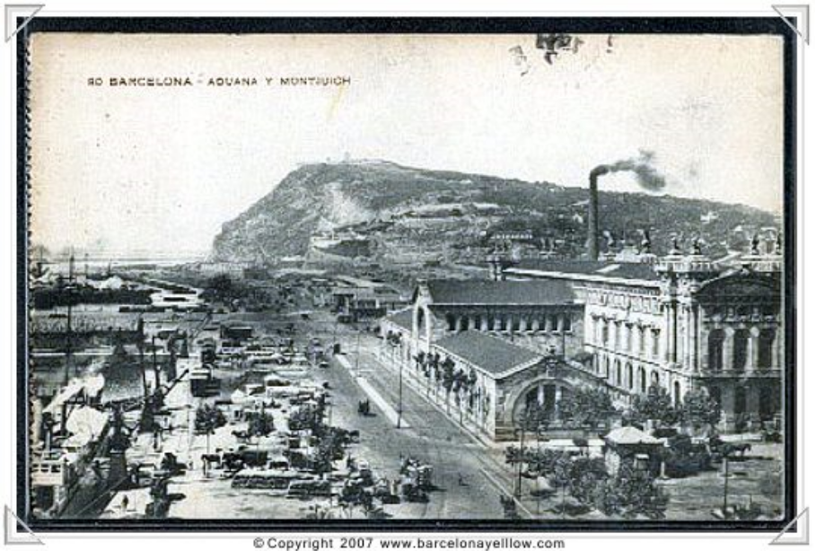
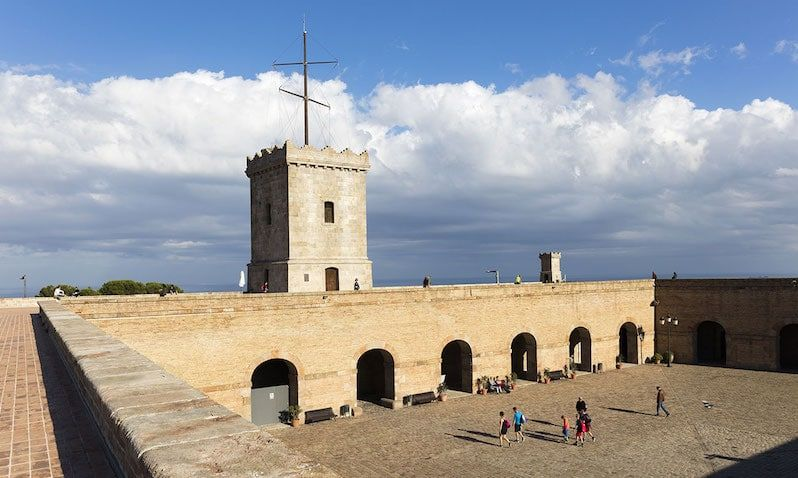
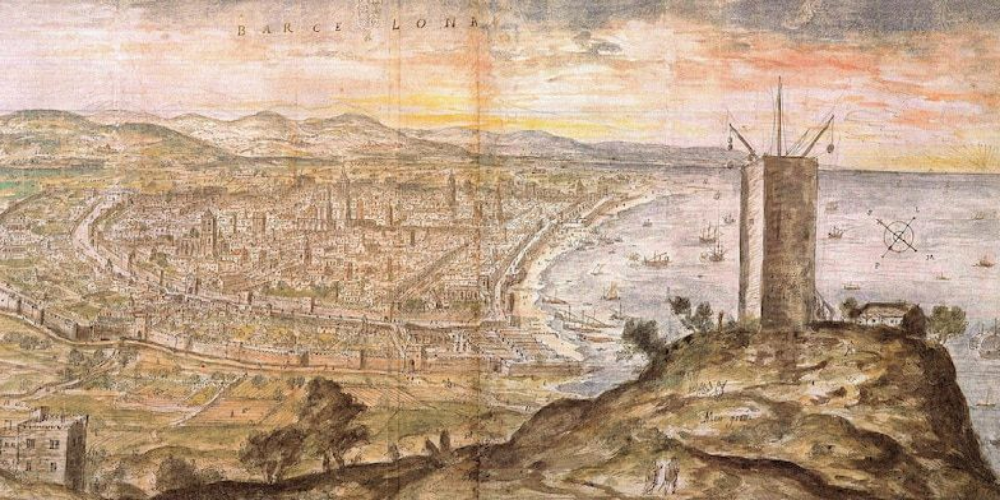
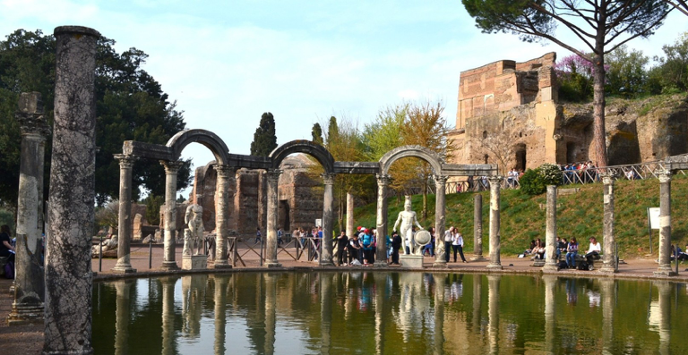

History




Montjuïc, because of its strategic location at the foot of the Mediterranean, and alongside an important river communication channel such as the Llobregat River, was the birthplace of the city of Barcelona. In recent years, archaeological discoveries that have been carried out have changed the vision of the history of Barcelona. Montjuïc became since the Iberian period, and especially Roman, the main quarry of Barcelona, which meant a drastic change in the mountain's physics.